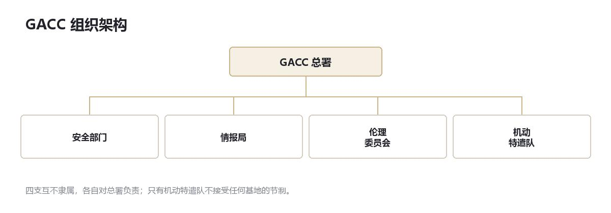
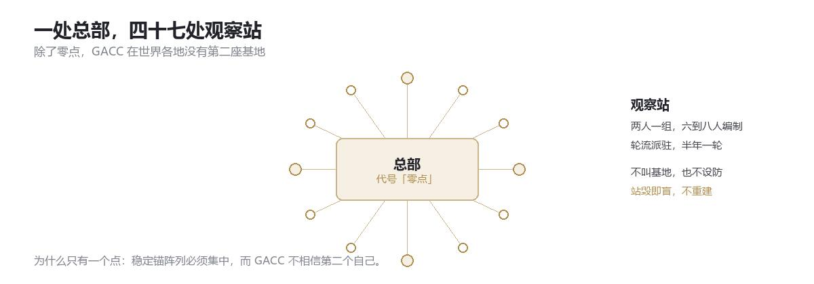

GACC · 档案库总目
全球异常收容指挥部
档案库 · 本册总目与全局概览
全球异常收容指挥部（GACC，Global Anomalous Containment Command），成立于 1947 年。本档按「分级 → 机构 → 阵列 → 档案」四区编目；其中分级是理解其余一切的第一把钥匙。
带 受限 标记的条目不对 C 级以下人员开放；预留 条目尚未解档。
档案索引
总览
收容分级
稳态侵蚀等级 0–5 与认知状态
总览
沿革
1888 年至今的收敛史
机构
GACC 总署
最高决策中枢
机构
安全部门
总部常驻武装
机构
情报局
摩涅莫绪涅之眼
机构
科研部
图特密藏所（已撤销）
机构
伦理委员会
轮值五人庭
阵列
机动特遣队
五大攻坚集群
阵列
制式装备
特战级军需
档案
对象档案
选编六份 · 受限
档案
职员档案
尚未解档 · 预留
组织架构

- GACC 总署 最高决策中枢，终审分级、任免高层、批准终极处置。
- 安全部门 总部常驻武装，秩序、防线与第一响应；下辖装备处。
- 情报局（摩涅莫绪涅之眼） 全域监测、对外博弈、档案规制；下辖解析组与白噪音组。
- 伦理道德委员会 轮值五人庭，审案子、记签名；常设只有三人加一把空椅子。
- 全域机动特遣作战集群 轮值战备，只接 3 级以上。
总部与外围

GACC 只有一座基地：总部，代号「零点」。
不是没钱，也不是没地方。是稳定锚阵列必须集中在一处，才钉得住整片区域；分散布设，每处都只是半根钉子。1973 年之后总署做过一次推演，结论是：第二座基地建成的那天，就会有第二个总署。
于是 GACC 在地图上只有一根针，和四十七个针眼。
外围是观察站，不是基地。两人一组，六到八人编制，轮流派驻，半年一轮。不设防、不驻军、不挂 GACC 的牌子。任务只有三件：看、记、报。
站毁即盲，不重建。这句话写在每一份派驻令的背面。